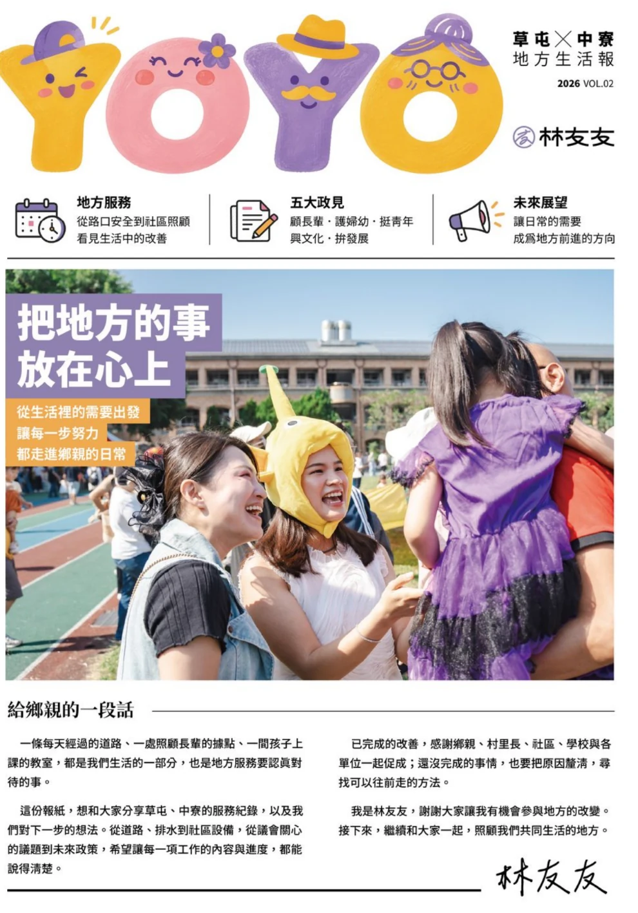

LOCAL LIFE JOURNAL · 2026 VOL.02
草屯 × 中寮
地方生活報
寫給未來的地方日常。這裡保留你提供的 2026 VOL.02 雙頁畫面，包含地方工作的想法、健康與教育等生活主題，以及給鄉親的一段話。點按圖片可另外開啟原尺寸閱讀。

資料來源：使用者提供的《草屯 × 中寮 地方生活報 2026 VOL.02》雙頁影像。此頁供線上閱讀；原始排版、文字與簽名皆予保留。
寫給未來的地方日常。這裡保留你提供的 2026 VOL.02 雙頁畫面，包含地方工作的想法、健康與教育等生活主題，以及給鄉親的一段話。點按圖片可另外開啟原尺寸閱讀。

資料來源：使用者提供的《草屯 × 中寮 地方生活報 2026 VOL.02》雙頁影像。此頁供線上閱讀；原始排版、文字與簽名皆予保留。